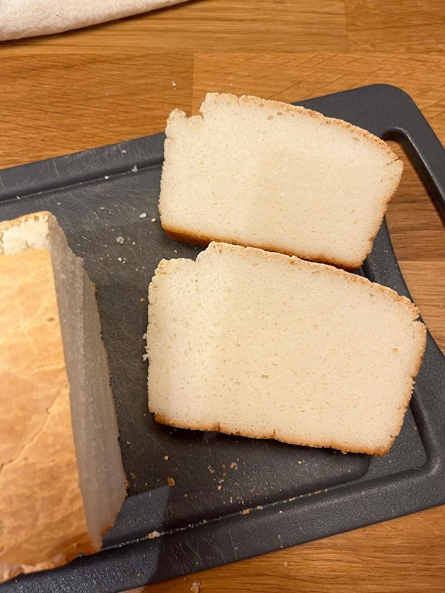

Pain sans gluten au riz basmati
⏱️ 40 à 50 min de cuisson
🔥 Très facile
👥 Un moule à cake de 18 cm

Étapes
- Trempage
Faites tremper le riz cru dans un grand volume d’eau pendant au moins 4 heures (ou toute une nuit). - Mixage
Égouttez le riz puis versez-le dans un mixeur avec :- l’eau tiède
- l’huile d’olive
- le sucre ou miel
- le sel
- le psyllium
- la poudre de lait (facultatif)
- Levure
Ajoutez la levure boulangère déshydratée. Mixez brièvement pour l’incorporer. - Repos
Versez la pâte dans un moule à cake tapissé de papier sulfurisé. Laissez lever 45 à 60 minutes dans un endroit tiède. La pâte doit monter et former des bulles. - Cuisson
Enfournez à 180°C pendant 40 à 50 minutes (ou dans un Air Fryer). Le dessus doit être bien doré.